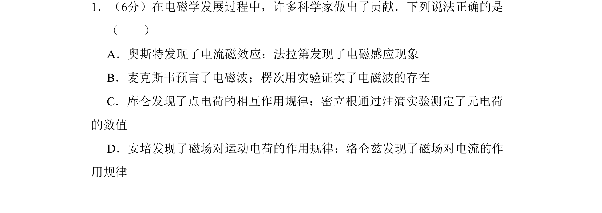
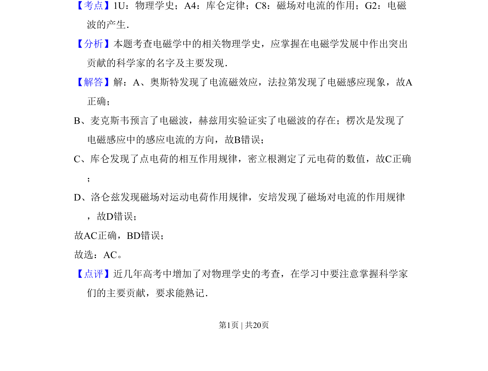

2010-新课标Ⅰ-01
考点：物理学史 库仑定律 磁场对电流的作用 电磁波的产生
题面

摘要
本题考查电磁学发展史中科学家的贡献，需判断关于物理学家及其发现的正确说法。
关联考点
答案与解析


📄 原 PDF 第 1 页：
素材/真题/吉林/2008-2024·（吉林）物理高考真题/2010年高考物理试卷（新课标Ⅰ）（解析卷）.pdf
题干文本
1．（6分）在电磁学发展过程中，许多科学家做出了贡献．下列说法正确的是 （ ） A．奥斯特发现了电流磁效应；法拉第发现了电磁感应现象 B．麦克斯韦预言了电磁波；楞次用实验证实了电磁波的存在 C．库仑发现了点电荷的相互作用规律：密立根通过油滴实验测定了元电荷 的数值 D．安培发现了磁场对运动电荷的作用规律：洛仑兹发现了磁场对电流的作 用规律
解析文本
【考点】1U：物理学史；A4：库仑定律；C8：磁场对电流的作用；G2：电磁 波的产生．菁优网版权所有 【分析】本题考查电磁学中的相关物理学史，应掌握在电磁学发展中作出突出 贡献的科学家的名字及主要发现． 【解答】解：A、奥斯特发现了电流磁效应，法拉第发现了电磁感应现象，故A 正确； B、麦克斯韦预言了电磁波，赫兹用实验证实了电磁波的存在；楞次是发现了 电磁感应中的感应电流的方向，故B错误； C、库仑发现了点电荷的相互作用规律，密立根测定了元电荷的数值，故C正确 ； D、洛仑兹发现磁场对运动电荷作用规律，安培发现了磁场对电流的作用规律 ，故D错误； 故AC正确，BD错误； 故选：AC。 【点评】近几年高考中增加了对物理学史的考查，在学习中要注意掌握科学家 们的主要贡献，要求能熟记．